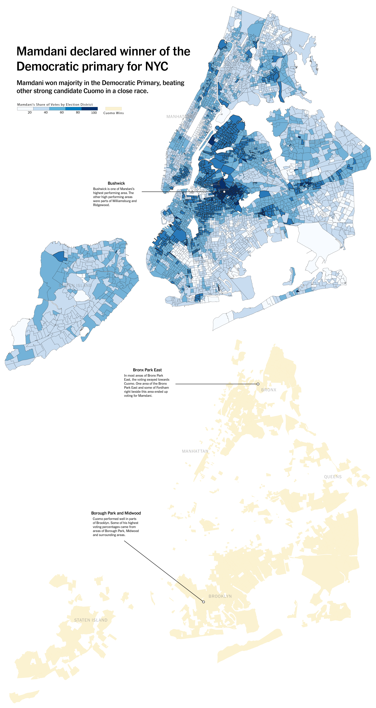
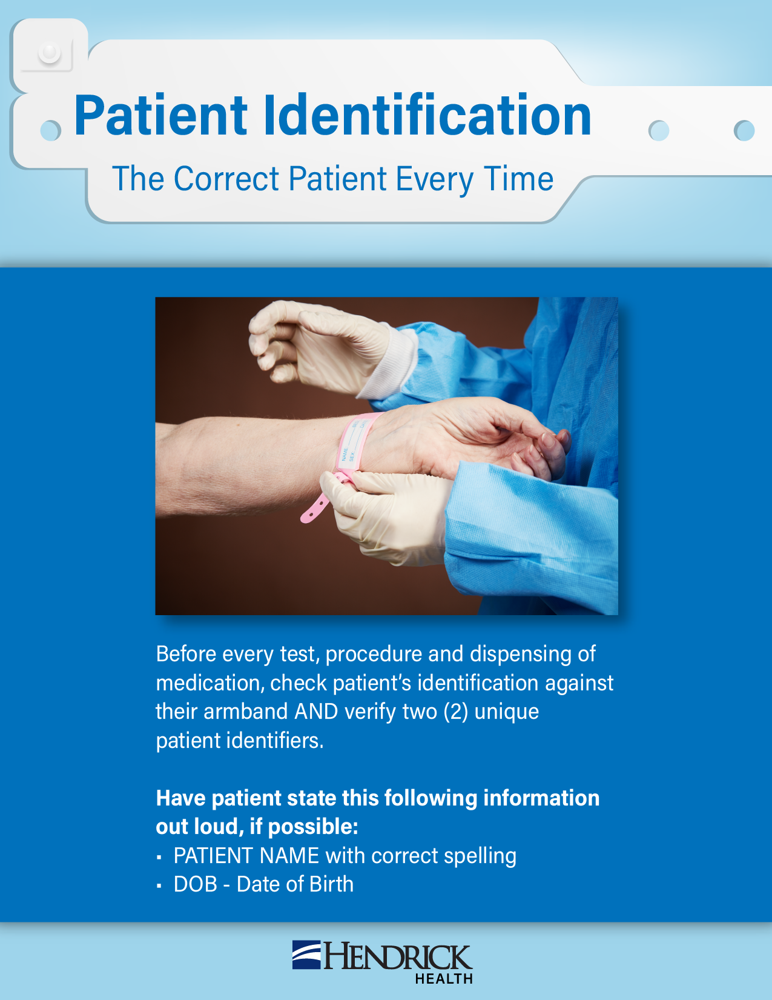

Women's College Basketball Graduation Rates for the 23-24 Season (Thesis Mock-Up)
This was a map that described the graduation rates for each ranking that was dependent on their records on the court. It displays how well the combined schools did on the court along with their graduation rates. To make this map, DataWrapper was used to make the base of the map and Adobe Illustrator was used to edit and annotate.
Mayoral Democratic Primary for NYC Election Map (Mock-Up)

This was a mockup of the mayoral elections in NYC. This was created in QGIS, with the data work for the percentages also in QGIS. The edits were then done in Adobe Illustrator.
Time To Vote Graphic
This was an announcement for employees at Hendrick Health for time off for voting. This graphic was built in Adobe Illustrator and made in several sizes for phones, newsletter, and computer and TV screens.
Zoo Day for Kids
This was an activity for children of Hendrick Health employees visiting the Zoo. This graphic was built in Adobe Illustrator.
Heart Attack Symptoms Flyer
This was a flyer made in both English and Spanish for patients experiencing these symptoms. The flyer was made in Adobe Illustrator.
Research Center Brochure
This was a brochure made for the research center at Hendrick Health. The flyer was made in Adobe Illustrator.
Patient Identification Flyer

This was an announcement for employees at Hendrick Health for how to correctly identify a patient. This graphic was built in Adobe Illustrator.
Nurses Week Announcement
This was an announcement for employees at Hendrick Health for a week of recognition for nurses. This graphic was built in Adobe Illustrator and made in several sizes for phones, newsletter, and computer and TV screens.
Breast Cancer Card
This was a card for patients who are or have experienced Breast Cancer at Hendrick Health. It was a gift to the patients from the clinics in a form of a printed card. This was created in Adobe Illustrator.
Fall Sale Advertisement
This was an announcement for employees at Hendrick Health for the fall sale. This graphic was built in Adobe Illustrator and made in several sizes for phones, newsletter, and computer and TV screens.
P.E.T. Cards
This was a project for the Pet Enhanced Therapy Services at Hendrick Health. It was a group of six baseball cards created for patients to collect. It was designed in Illustrator.
Workforce Development Card
This was a card for employees as a congratulatory card to give them. It was created in Illustrator.
Hendrick Health Mission and Ministry Announcements
This was designed for the missions and ministry department at Hendrick Health. It was designed in Illustrator.
Hendrick Health Employee Survey
This was a project for an employee engagement survey. It was designed in Illustrator.


.png)
.png)


.png)
.png)


.png)
.png)
.jpg)

.png)